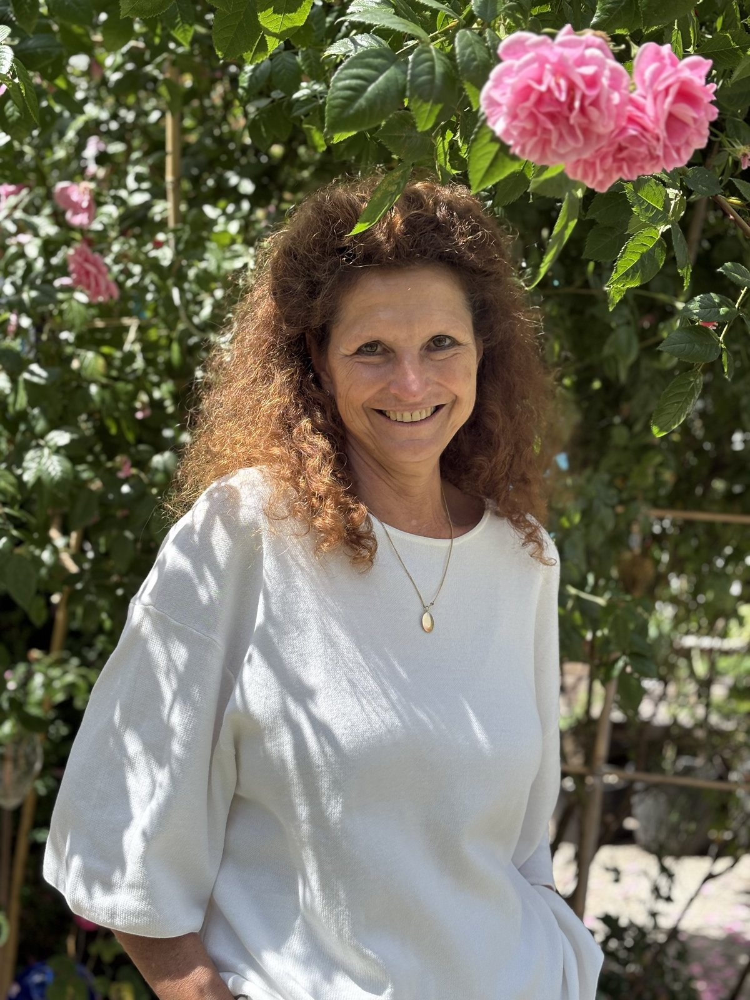

Ich begleite, berate und unterstütze Menschen in ihrer Entwicklung.
Der berufliche Aspekt steht oft im Vordergrund, das Private darf dabei nicht außen vor bleiben.

Was
Ich begleite, berate und unterstütze Menschen in ihrer Entwicklung. Der berufliche Aspekt steht oft im Vordergrund, das Private darf dabei nicht außen vor bleiben. Wenn Sie wissen, wer sie sind, können Sie besser greifen, was Ihnen leichtfällt und was Ihr Potential erlaubt. Ich erforsche Ihren persönlichen Grundton, diejenige Schwingung also, die Ihr Potential bereithält und das sich ausbreiten will.
Ich helfe, Gedanken zu ordnen und den Fokus zu finden, kreativ Lösungensmöglichkeiten zu entwickeln und loszulassen, was nicht mehr zu Ihnen passt.
In einem persönlichen Gespräch finden wir gemeinsam heraus, was genau die Frage ist, die Ihnen das Leben stellt und welcher Weg für Sie der Beste ist, Antworten zu finden.
Wer
Als „Münchner Kindl“ bin 1964 geboren und habe München erst 1991 nach meinem Betriebswirtschaftsstudium als Diplom-Kauffrau verlassen. Inzwischen ereignete sich die politische Wende in Deutschland, weshalb ich zunächst als Referentin und später als stellvertretende Abteilungsleiterin im Direktorat Abwicklung der Treuhandanstalt in Berlin tätig wurde. Dort erlebte ich das erste Mal, wie es Menschen geht, die ihre Arbeit verlieren und sich und ihr Leben neu ordnen müssen. Ich erlebte auch, was es heißt, Chancen des „Aufbau Ost“ zu nutzen, um etwas Neues zu wagen und sich selbst damit zu entwickeln.
Auch mein eigener, weiterer Weg war von Aufbau geprägt. Ich blieb dem Osten Deutschlands treu und entschloss mich 1993, gemeinsam mit meinem Mann Michael das ehemalige Ferienheim der Gewerkschaft „Zur Bleiche“ im Spreewald zum Lieblingshotel seiner Gäste zu entwickeln. Was damals noch keiner ahnte, aber Ergebnis konsequenter Arbeit war: Die Bleiche wurde von einem Sommer-Saisonhotel zu einem Ferien-Hotel mit Ganzjahresauslastung, das zu den 100 besten in Europa zählt.
Hotel ist ein komplexes Unternehmen. Ich beschäftigte mich mit der Historie des Ortes, was den Spreewald so besonders macht, wie man eine Landschaft ins Haus holen kann und weshalb man das auch im Hotel erleben muss. Ich kümmerte mich um die Neugestaltung der Räume, gab ihnen Geschichte und ein Gesicht, schrieb unzählbare Texte, die Menschen berühren und uns verständlich machen sollten. Und kümmerte mich um den Grund, warum Gäste zu uns kommen sollten und wenn sie da waren, dass es ihnen gut geht. Die Mitarbeitenden brauchten Ein- und Anweisung, manchmal Trost und Ermutigung, immer Entwicklung und so sind so viele von ihnen mit uns und dem Haus mitgewachsen, heute noch hier. Plötzlich kam Wellness, und noch davor hatten wir schon die Antwort, ein Konzept, was dann Vorbild für andere war. Das Haus wuchs über die vielen Jahre und mit ihm der Anspruch, Lieblingshotel wird man ja nicht einfach so. Mit dem Anspruch wuchsen die Aufgaben, wurden mehr, nicht nur bewältigt, sondern in etwas Schönes, Kulturvolles verwandelt. Die Bleiche als Sehnsuchtsort, sagen manche.
Von all den Aufgaben, die mir das Leben geschenkt hat, sind es aber meine drei Kinder, die mich am glücklichsten machen und mich jeden Tag dankbar sein lassen. Alle drei sind längst erwachsen, selbstständig und gut für das Leben gerüstet. Der Generationswechsel im Hotel steht vor der Tür.
In 33 Jahren erlebt man nicht nur Höhe, sondern auch Tiefen, die man meistern muss. Zwei große Brände und die Schließung des Hotels in der Corona-Zeit waren prägende Einschnitte. Neben den vielen positiven Erfahrungen, die man in einem Berufsleben sammelt, sind es gerade die Krisen, an denen man wächst. Mit einem starken Wertegerüst, einer klaren Zielsetzung, die immer den Menschen im Blick behält, viel Liebe und humorvoller Leichtigkeit konnte ich alle Zeiten als für mich wertvoll erleben. Mehr denn je möchte ich andere daran teilhaben lassen und sie in ihrer Entwicklung unterstützen.
Neben den Grundlagen meines Studiums und den Berufsjahren, vor, neben und nach meinem Studium habe ich nie aufgehört, dazuzulernen. So bin ich inzwischen auch Kuratorin der Spreewälder Kulturstiftung, ausgebildeter Business-Coach, SaMaSonologin und arbeite mit dem Wissen und Techniken nach dem Intraact-Konzept, einem verhaltenstherapeutischen Ansatz mit dem Fokus auf Bindung und Beziehung.
Wenn Sie mich fragen, was mich ausmacht, antworte ich: es ist das Einfühlungsvermögen, die Fähigkeit zur Gesamtsicht, strategisches Vermögen und die echte Freude an Ihrer Entwicklung. Es geht mir um den Menschen. Immer.
-
1964 · München
Geboren als „Münchner Kindl“. Studium der Betriebswirtschaft, Diplom-Kauffrau.
-
1991 · Berlin
Referentin, später stellvertretende Abteilungsleiterin im Direktorat Abwicklung der Treuhandanstalt.
-
1993 · Spreewald
Aufbau des Hotels „Zur Bleiche“ - heute unter den 100 besten Hotels Europas.
-
Heute
Einzelcoaching und Beratung. Kuratorin der Spreewälder Kulturstiftung.
Ausbildung
-
Diplom-Kauffrau
Studium der Betriebswirtschaftslehre, München.
-
Ausgebildeter Business-Coach
Coaching-Ausbildung mit Schwerpunkt auf beruflicher Entwicklung.
-
SaMaSonologin
Grundtonbestimmung nach dem Nadabrahma-System von Vemu Mukunda. Mitglied im Institut für Tonkraft.
-
Intraact-Konzept
Verhaltenstherapeutischer Ansatz mit dem Fokus auf Bindung und Beziehung.
-
Kuratorin der Spreewälder Kulturstiftung
Ehrenamtliches Engagement für Kultur und Region.
Wie
Ich schöpfe aus der Quelle meines Wissens aus Theorie und Praxis, meiner langjährigen Erfahrung als „Hotel-Chefin“, aus den vielen Begegnungen mit Menschen, seien es Gäste, Mitarbeitende oder Autoren, die in 18 Jahren Spreewald-Literatur-Stipendium für je vier Wochen in der Bleiche gelebt und gearbeitet haben. All dieses Wissen, explizit wie implizit, steht Ihnen zur Verfügung, wenn wir uns mit Ihren Fragen beschäftigen.
Etwas Besonderes ist die SaMaSonologie. Sie thematisiert das Verständnis des Menschen als klingenden Kosmos, zentral gestimmt auf den Persönlichen Grundton. Die Grundlage bildet das aus Indien stammende Nadabrahma System von Vemu Mukunda. Es lohnt sich, mehr darüber zu erfahren, weshalb ich auf die Seite des Instituts für Tonkraft, dessen Mitglied ich bin, verweisen möchte: www.tonkraft.net.
Grundtonbestimmung
Für eine Grundtonbestimmung, die Sie auch nur allein für sich buchen können, planen Sie bitte zwei persönliche Treffen ein. Das erste Treffen dient zur Messung Ihrer Sprechstimme sowie einem anschließenden Gespräch, indem Sie sich selbst beschreiben und ich Sie mit allem, was Sie ausmacht, kennenlerne. Im zweiten Termin erfahren Sie von mir, welcher Grundton der Ihre ist und welche tontypischen Merkmale ihn ausmachen. Wichtig dabei ist, dass alle Töne in ihrer Schönheit verschieden sind, jeder gleichwertig und in seiner Art besonders. Es geht vor allem darum, das Potential des eigenen Grundtons wertzuschätzen und ihn mit einer Grundtonübung zum Schwingen zu bringen.
Wichtig bei allem: es ist ganz unkompliziert, wir sprechen auf Augenhöhe und vor allem darf auch die Freude dabei nicht zu kurz kommen.
Werte
Eine werteorientierte Lebensführung hilft mir sehr, meinem inneren Kompass zu folgen. Folgen heißt dabei, ehrlich zu sein, denn nach Werten zu leben schließt das stete Ringen um diese Werte mit ein. Und doch helfen sie, Ordnung zu halten, den Charakter danach zu formen und die Welt im eigenen Einflussbereich zum Wohle aller ein Stückchen besser zu machen. Das jedenfalls ist mein Anspruch.
Sich auf bestimmte Werte festzulegen ist gar nicht so leicht. Ich beziehe mich daher auf die fünf menschlichen Werte, wie sie auf das Leben und Wirken von Satya Sai Baba zurückgehen:
- Wahrheit
- richtiges Handeln
- Frieden
- Liebe
- Gewaltlosigkeit
Ich wende diese Werte auf alle Lebensbereiche an, auf mein Privatleben genauso wie auf die Arbeitswelt, auf die zwischenmenschlichen Beziehungen und auf mein Verhältnis zur Natur. Jeder einzelne Wert kann sicherlich auf verschiedene Weise interpretiert werden, hat viele Facetten, es eint sie aber ein ganzheitliches Menschenbild, eine allumfassende Verbundenheit und der Respekt und die Liebe zur Schöpfung.
Referenzen Grundtonbestimmung
Zur Grundtonbestimmung bei Christine kam ich über die Empfehlung einer Freundin, die mir ganz begeistert von der gemeinsamen Zeit und den Erkenntnissen erzählt hatte. Da in meinem Leben gerade so in einigen Bereichen, besonders beruflich viele Fragezeichen auftauchten, fand mich der Hinweis im perfekten Moment. Das erste Gespräch mit Christine war unglaublich warm und offen und ich habe mich sofort verstanden gefühlt. Sie hat in knapp einer Stunde so ein rundes und klares Bild von mir gehabt, dass ich die eigentliche Aufnahme meiner Stimme völlig vergessen konnte.
Die Auswertung war so spannend! In solchen Momenten der Selbsterfahrung habe ich selten das Gefühl etwas komplett neues über mich zu lernen, sondern das ich die perfekte Person gefunden habe, die das, was ich vielleicht intuitiv manchmal spüre, endlich in Worte fasst und für mich greifbar machen kann. Christine hat das mit einer solchen Präzision gemacht, dass ich nach unserer Auswertung mindestens 2m größer und total stolz und dankbar mit ganz viel Wertschätzung für mich selbst und ihrer Arbeit nach Hause gehen durfte. Die Übungen sind ein wunderbarer Moment mich jeden Tag mit meinem Grundton zu verbinden, vielen Dank für diese Erfahrung mit dir !
CharlotteCharlotte Dörken, 31.08.2026
Ich glaube, am meisten hängen geblieben ist dieses Gefühl, von dir wirklich gesehen worden zu sein, in meinen Fähigkeiten und Kompetenzen, die für mich selbst und für andere oft gar nicht so sichtbar sind. Das hat mich sehr berührt und gleichzeitig viel in mir bestärkt.
Unsere Session kam in einer sehr besonderen Phase meines Lebens und ich glaube, sie hat einen Prozess unterstützt, in dem ich wieder näher an mich selbst gekommen bin: klarer zu spüren, was mir guttut, wo meine Grenzen sind und mich an vieles erinnert, was ich eigentlich längst weiß. Daraus habe ich tatsächlich auch sehr große, lebensverändernde Entscheidungen getroffen. Nicht, weil du mich irgendwohin gelenkt hast, sondern weil ich mich danach irgendwie mehr empowered gefühlt habe, mir selbst zuzuhören und meinem eigenen Empfinden und Wert wieder mehr Raum zu geben.
Pia piaheld.com
Während des Coachings habe ich gelernt, meine inneren Stimmen zu benennen und ihren Einfluss auf meine Lebensentscheidungen zu erfassen. Nicht alle Stimmen sind dabei Fürsprecher meiner selbst. Um das auszudifferenzieren, braucht es manchmal Hilfe, die ich im Coaching gefunden habe.
Kurz vor meinem Bachelorabschluss standen verschiedene Möglichkeiten im Raum, wie sich mein weiterer Lebensweg gestalten könnte. Es war eine wunderschöne Erfahrung, bei diesen teilweise verunsichernden Lebensfragen nicht allein zu sein. Christine Clausing hat mir das Gefühl gegeben, gehört und verstanden zu werden. In verunsichernden Momenten hat sie mich gestützt, sodass ich mit viel Energie große Schritte Richtung Veränderung gehen konnte.
Paula, 25 Jahre, Kunststudentin
Schreiben Sie mir
Für einen ersten Kontakt schreiben Sie mir gerne eine Email an christine@cc-coaching.net mit Ihrer Telefonnummer. Ich antworte sicher und wir vereinbaren ein kostenfreies Telefonat, um Ihr Anliegen einzukreisen. Ich sage Ihnen dann, wie ich vorgehen würde und was es kostet.